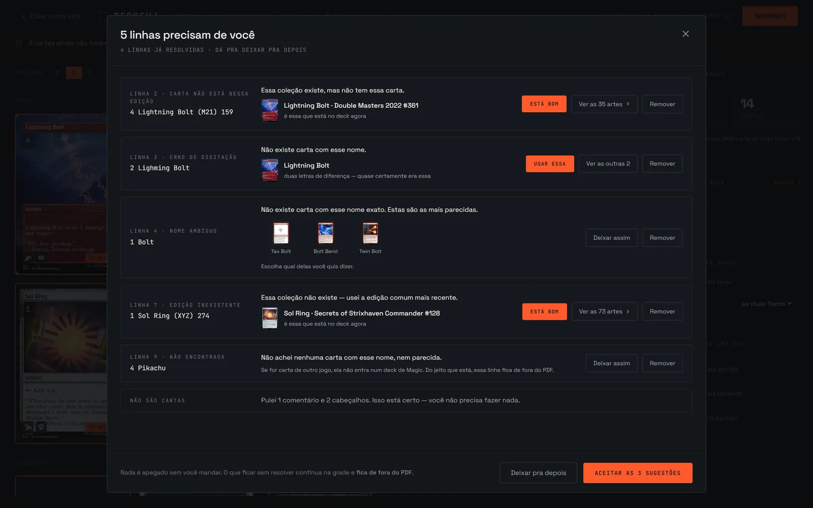
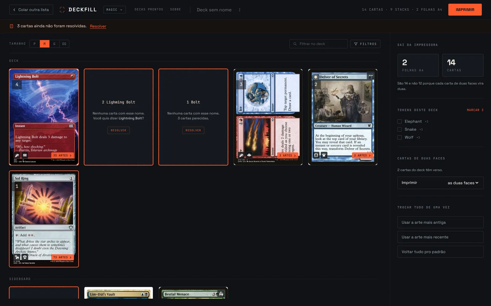
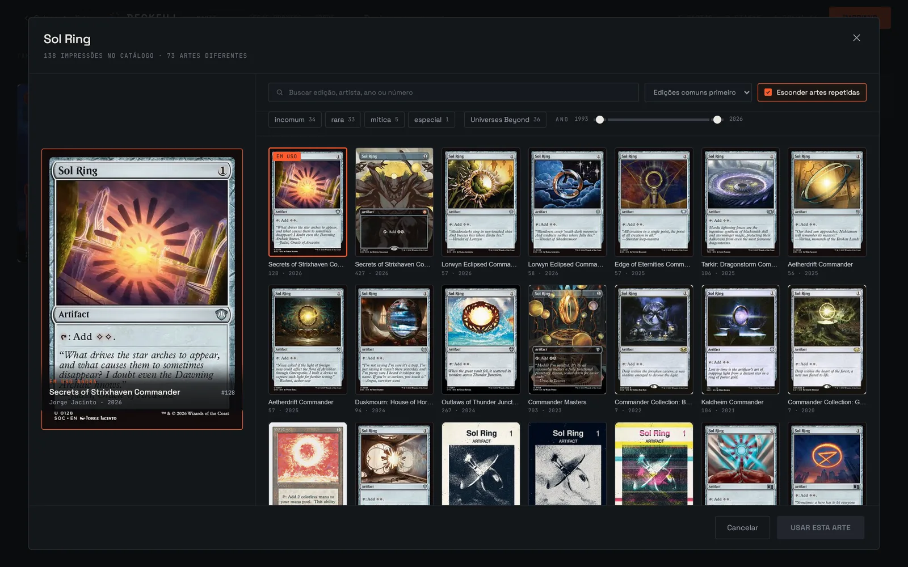
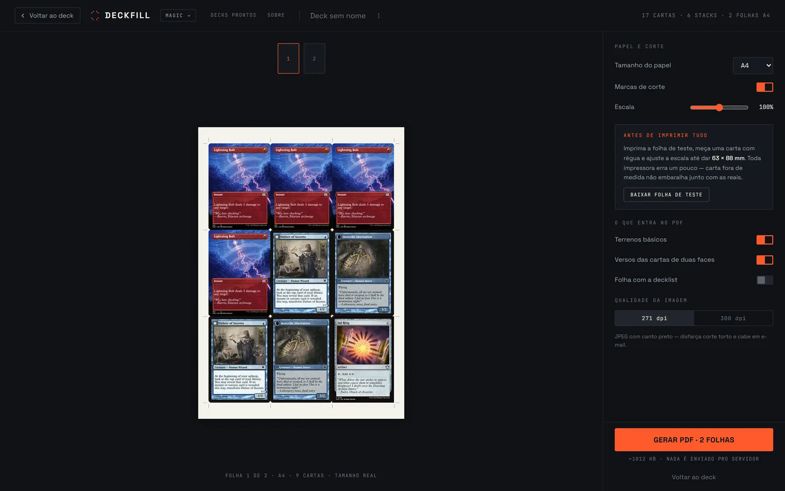
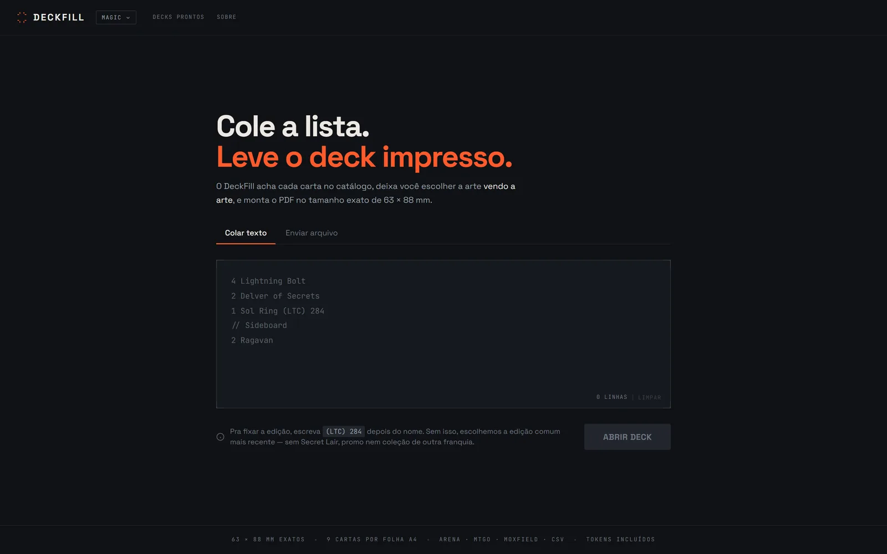
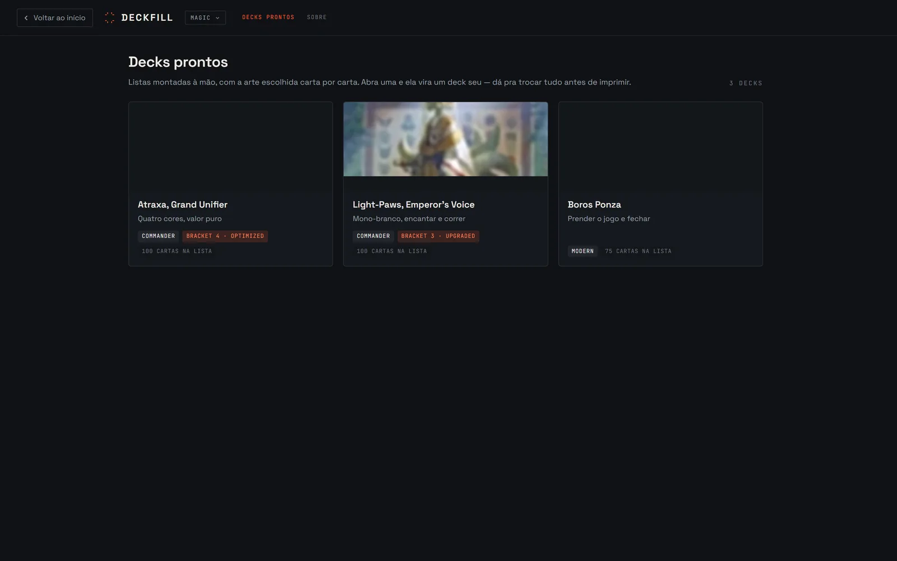
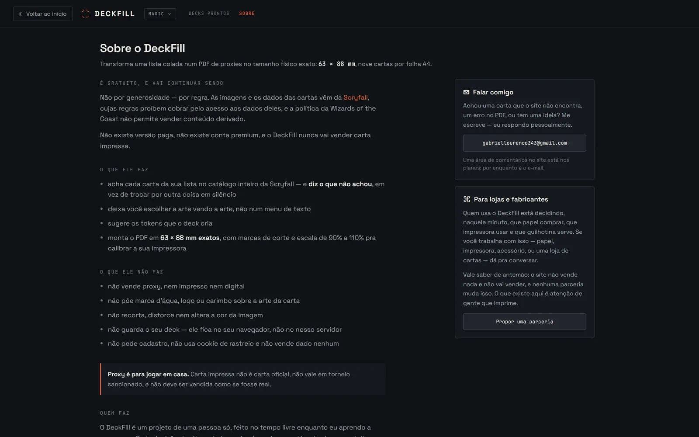

No ar e em uso
Front-end em React com TypeScript, back-end em Django sem framework de API, banco Postgres. O PDF é gerado no seu navegador: nenhuma carta que você escolhe passa pelo meu servidor.
Projeto autoral | Ferramenta
Você cola uma decklist e recebe um PDF pronto pra imprimir, com as cartas no tamanho exato de 63 × 88 mm. Esta é a segunda versão. A primeira funcionou, cresceu, e parou de funcionar, e a história de por que isso aconteceu é a parte mais útil desta página.

Magic: The Gathering é um dos jogos de cartas mais caros do mundo. Muitas vezes o jogador quer testar um baralho novo antes de gastar dinheiro comprando as cartas originais, e é aí que entram as proxies: impressões não oficiais, usadas só pra teste e jogo casual entre amigos.
O trabalho não está em achar a imagem. Está em achar a imagem certa, no tamanho certo, e organizar tudo numa folha A4 sem que a carta saia com dois milímetros a mais e denuncie o baralho inteiro quando você embaralha. O DeckFill existe pra resolver essa parte chata.
A versão 1 usava Python com FastAPI e um banco SQLite. Ela funcionava, e como funcionava eu fui adicionando coisa. Comecei com Magic e resolvi expandir pra Yu-Gi-Oh!, Pokémon, Lorcana e mais alguns, sete jogos no total, cada um com sua API.
Duas coisas quebraram ao mesmo tempo.
A primeira foi o banco. Sete catálogos de carta viraram mais de 600 MB de arquivos SQLite locais, perto de 1 GB no fim. Nenhum plano gratuito de hospedagem aguenta isso, e a sincronização começou a quebrar sozinha. Eu passei a gastar o tempo mantendo a infraestrutura de pé em vez de melhorar o site.
A segunda foi pior, e demorei pra admitir. Eu mexia naquele código todos os dias, por meses, e chegou um ponto em que eu abria o projeto e não conseguia achar as coisas. Não sabia onde estava cada parte nem por que ela tinha sido feita daquele jeito. O código era meu, recente, e mesmo assim eu me perdia nele.
Foi por isso que eu parei. Não foi o banco cheio. Foi eu não conseguir mais trabalhar no meu próprio projeto.
Quando escrevi sobre o DeckFill aqui no portfólio, em 2026, eu terminei o texto com uma seção chamada "O que eu farei no futuro". Prometi três coisas:
Estudo profundo de cada API. Antes de escrever qualquer linha de código, vou ler as documentações de cabo a rabo.
Arquitetura antes do código. Vou desenhar a modelagem dos dados primeiro.
Um jogo por vez. Vou focar em refazer a infraestrutura para que um único jogo (o MTG) rode de forma impecável, antes de sequer pensar em adicionar o segundo.
Escrito por mim na versão anterior desta página, antes de existir qualquer linha da versão 2.
O resto desta página é sobre o que aconteceu quando eu levei essas três frases a sério.
Em vez de ler só a documentação, eu fiz uma coisa que funcionou melhor: montei uma lista de decklist feita pra quebrar, com uma linha errada de cada jeito possível, e colei a mesma lista em quatro ferramentas concorrentes pra ver o que cada uma fazia na tela.
As quatro corrigem a sua lista em silêncio. A mais usada delas trocou 1 Sol Ring (XYZ) 274, onde o código da coleção nem existe, por uma carta de 1994, sem dizer nada. Tecnicamente é a correspondência mais próxima. Na prática é um absurdo, e ninguém te conta.
A mesma lista, com doze linhas quebradas de propósito, colada em MTG Print, MPC Autofill e TCGplayer Mass Entry:
4 Lightning Bolt (M21) 159 virou outra coleção, sem aviso.Sideboard (15) deu erro: leram o (15) como código de coleção.// comentario foi apagado da tela sem explicação.3 Fire // Ice quebrou em duas cartas inexistentes numa delas, porque a barra dupla significa três coisas diferentes no mundo dos card games.2 Lighming Bolt, erro de digitação óbvio, não recebeu nenhuma sugestão em nenhuma das três.A conclusão que virou o produto: a barra dupla é posicional. No começo da linha é comentário, no meio é nome de carta. E o erro de digitação é a maior brecha do mercado, porque todo mundo desiste dele.
Foi dessa pesquisa que saiu a decisão central do projeto: a tela que explica o erro não é um detalhe, é o produto. Ela fala qual linha, o que aconteceu, e o que eu fiz a respeito. Quando a carta sugerida está perto do que você digitou, ela oferece um botão de um clique. Quando está longe, ela mostra as opções e manda você escolher, porque oferecer um clique pra um palpite é adivinhar.
Foram treze documentos de planejamento antes da primeira tela existir: escopo, referências de interface, decisões de produto, direção visual, o parse, a impressão, a stack, segurança, licenciamento e o contrato da API. Só quando o décimo terceiro fechou as últimas dúvidas é que o código começou.
Hoje são trinta documentos, e a regra escrita na abertura de todos eles é "medido, não lembrado": quando o assunto é como os outros fazem, eu abro os sites e testo, e o documento registra o que aconteceu na tela, não o que a documentação promete.
Construindo o parse, descobri que o meu próprio banco cometia o pecado que a minha pesquisa acusava nos concorrentes. Eu guardava uma impressão por arte, então pedir uma carta numa coleção específica podia responder "não tenho essa carta nessa coleção" para uma coleção que tem a carta. Só 52% das impressões que existem de verdade estavam no meu banco.
A tese do projeto é que corrigir a lista do usuário em silêncio é o erro central dos concorrentes. Ao escrever o parse, testei [MM2] 105 para uma carta que existe nessa coleção e recebi "não encontrada".
A causa: o sync guardava só uma impressão por arte distinta, o que fazia sentido pra economizar espaço, e apagava justamente a informação que o usuário estava pedindo. Eram 52% das 105.046 impressões de papel que a fonte tem.
A correção foi guardar todas as impressões e mover a remoção de duplicata para a tela, onde ela é escolha de quem está olhando, e não decisão escondida do servidor.
O que eu tiro disso: escrever a crítica dos outros me deu o critério pra achar o mesmo defeito em casa. Sem a pesquisa, eu não teria olhado.
Uma coluna guardava o arquivo original de cada carta, comprimido. Eram 118 MB para produzir 32 caracteres, porque a única coisa que alguém fazia com aquele conteúdo era calcular um código curto pra saber se a carta tinha mudado. O banco caiu de 87% para 30% do limite do plano gratuito.
O que fez diferença não foi o espaço recuperado, foi o custo de cada carta nova:
A regra que ficou anotada: espaço recuperado é evento, custo por linha é taxa. Limpar o banco sem mudar o custo por linha é ganhar espaço e voltar a gastar no mesmo ritmo.
Junto veio um erro de método meu que vale mais que o conserto. Eu estimei o crescimento comparando duas medições com dois dias de diferença e errei por uma ordem de grandeza. O número certo estava dentro do próprio banco: bastava contar quantas cartas foram lançadas por ano nos últimos cinco anos. Taxa não se mede por duas medições próximas, se mede pelo histórico.
Trocar a arte de todas as cartas de um deck fazia uma chamada por carta. Num deck de 100, eram 100 chamadas e 50,6 segundos. Virou uma chamada só de 1,3 segundo.
A consulta que responde "qual é a impressão padrão desta carta" já existia e já era usada quando a lista é colada. O trabalho foi deixar de perguntar carta por carta e passar a perguntar pelo deck inteiro de uma vez.
Isso conversa com outra medição do projeto: a espera pra abrir um deck era de cerca de 950 ms, e 941 deles eram cinco consultas de ida e volta pela rede, não processamento. Reduzir o número de consultas vale mais do que deixar cada consulta mais rápida.
Só Magic. O banco continua preparado pra mais de um jogo, e o cabeçalho do site tem um lugar reservado pro seletor, mas é reserva de espaço, não funcionalidade. Reservar o lugar custa nada agora e evita refazer o cabeçalho inteiro depois.
Essa foi a promessa mais difícil de cumprir, porque foi exatamente o excesso de jogos que matou a versão 1, e a vontade de adicionar o segundo não some. O que ajuda é que agora existe um custo escrito: depois da faxina no banco, um catálogo inteiro de Pokémon caberia em uns 15 MB. O banco deixou de ser o impedimento, e o que sobra são as perguntas de verdade, que são a licença da fonte de dados e o parse de decklist de cada jogo.
Antes de investir meses, fui apurar o que acontece com quem faz isso. Em 2023 a Wizards derrubou a ferramenta concorrente mais usada por três dias. Ela voltou removendo uma coisa só: a opção de comprar proxies prontas. A ferramenta gratuita de imprimir em casa continua no ar até hoje.
A conclusão é que a linha não é imprimir, é vender. Isso decidiu três coisas no DeckFill:
Faço questão de separar, porque as duas partes deste projeto tiveram origens diferentes.
O banco de dados é inteiramente meu. A modelagem, o comando que sincroniza o catálogo todas as noites, a decisão de inserir em lote depois de eu medir que carta por carta levaria umas 30 horas: tudo isso foi escrito antes de eu usar o Claude Code, sozinho. Depois, trabalhando com ele, apareceram problemas ali dentro que eu não tinha visto. Mas achar defeito em código pronto é outra coisa, e bem mais fácil, do que escrever o código.
O resto foi programação assistida, e com um método. Eu passo mais tempo planejando do que construindo, e mais tempo ainda depois procurando problema no que foi construído. Quando o primeiro ciclo fechou, eu fui atrás dos defeitos com a minha própria mão, conferi tudo e arrumei. É por isso que existem trinta documentos: eles são o que me permite voltar ao projeto depois de duas semanas e ainda entender por que cada coisa está daquele jeito.
Que é, exatamente, o que eu não conseguia fazer na versão 1.
Front-end em React com TypeScript, back-end em Django sem framework de API, banco Postgres. O PDF é gerado no seu navegador: nenhuma carta que você escolhe passa pelo meu servidor.
A medida é conferida dentro do arquivo PDF gerado, não confiada à impressora. A tela ainda oferece uma folha de teste pra você medir com régua e ajustar a escala, porque toda impressora erra um pouco.
255 no back-end e 316 no front-end. Eles rodam sem banco e sem rede, porque as partes que decidem as coisas foram escritas sem depender de framework.
36.535 cartas e 106.340 impressões, sincronizadas de madrugada todos os dias por uma rotina automática.
Capturadas do site no ar. As duas últimas são da versão 1, e entram aqui porque a comparação é o assunto desta página.






Este projeto continua sendo feito. Esta seção cresce a cada mudança grande.
Depois de usar o site publicado, virou claro que dava pra imprimir mas não dava pra trabalhar no deck. Este ciclo é sobre ir e voltar entre telas sem perder nada, organizar as cartas e achar o que se procura numa lista de cem.
O caminho inteiro existindo de ponta a ponta: colar a lista, revisar o deck, gerar o PDF. A carta sai em 63 × 88 mm medidos dentro do arquivo.
Treze documentos antes da primeira tela. Escopo, pesquisa dos concorrentes com lista feita pra quebrar, impressão, stack, segurança, licenciamento e o contrato da API.
Python com FastAPI e SQLite, sete jogos, mais de 600 MB de banco. O site ainda carrega, mas a API por trás está desligada de propósito.